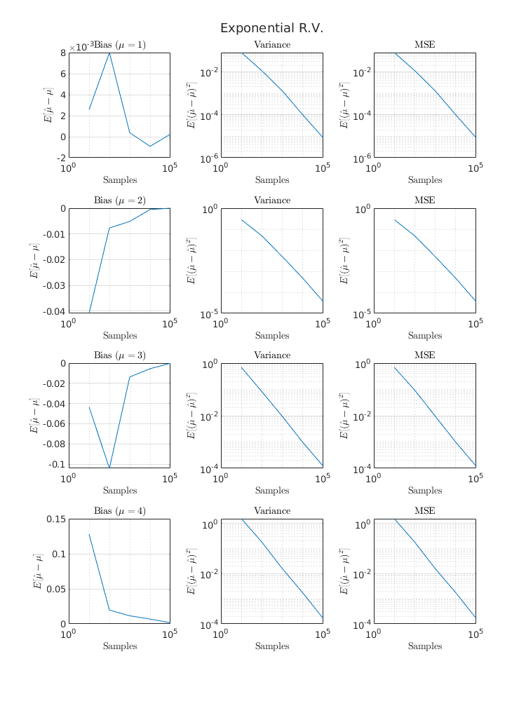
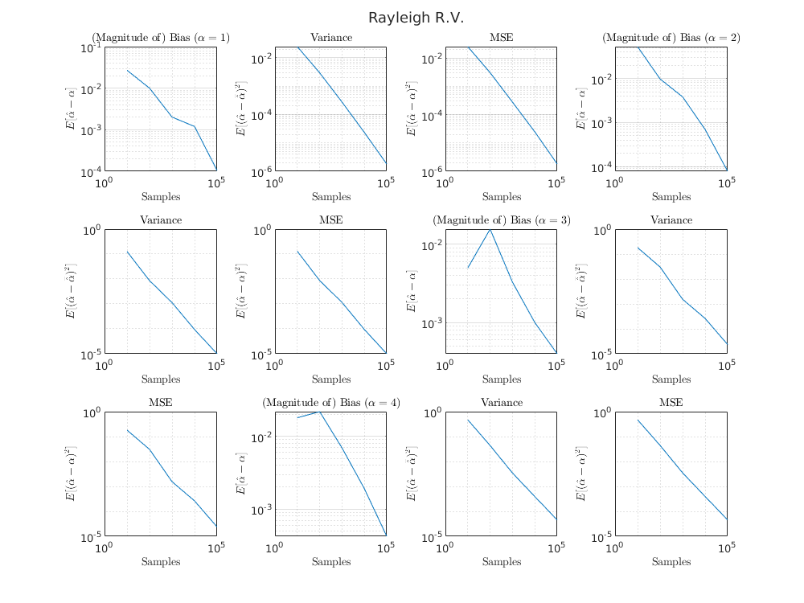
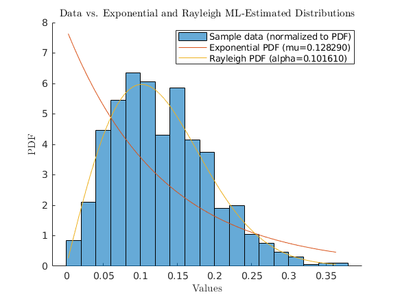

Contents
clc; clear; close all;
set(0, 'defaultTextInterpreter', 'latex');
est_fn_ray = @(samples) sqrt(mean(samples.^2)/2);
Q1
Ns = logspace(1, 5, 5);
params = 1:4;
figure('Position', [0 0 1000 750]);
t1 = tiledlayout(3, length(params));
sgtitle("Exponential R.V.");
figure('Position', [0 0 1000 750]);
t2 = tiledlayout(3, length(params));
sgtitle("Rayleigh R.V.");
for param=params
exp_res = zeros(length(Ns), 3);
ray_res = zeros(length(Ns), 3);
for Ni=1:length(Ns)
for M=100
N = Ns(Ni);
[exp_bias, exp_var, exp_mse] = ...
run_experiment(N, M, param, @exprnd, @mean);
[ray_bias, ray_var, ray_mse] = ...
run_experiment(N, M, param, @raylrnd, est_fn_ray);
exp_res(Ni, :) = [exp_bias exp_var exp_mse];
ray_res(Ni, :) = [ray_bias ray_var ray_mse];
fprintf("N=%d param=%d: %f %f %f; %f %f %f\n", ...
N, param, ...
exp_bias, exp_var, exp_mse, ...
ray_bias, ray_var, ray_mse);
end
end
nexttile(t1);
loglog(Ns, abs(exp_res(:,1)));
title(sprintf('(Magnitude of) Bias ($$\\mu=%d$$)', param));
xlabel("Samples");
ylabel("$$E[\hat\mu-\mu]$$");
grid on;
nexttile(t1);
loglog(Ns, exp_res(:,2));
title('Variance');
xlabel("Samples");
ylabel("$$E[(\hat\mu-\bar{\hat\mu})^2]$$");
grid on;
nexttile(t1);
loglog(Ns, exp_res(:,3));
title('MSE');
xlabel("Samples");
ylabel("$$E[(\hat\mu-\mu)^2]$$");
grid on;
nexttile(t2);
loglog(Ns, abs(ray_res(:,1)));
title(sprintf('(Magnitude of) Bias ($$\\alpha=%d$$)', param));
xlabel("Samples");
ylabel("$$E[\hat\alpha-\alpha]$$");
grid on;
nexttile(t2);
loglog(Ns, ray_res(:,2));
title('Variance');
xlabel("Samples");
ylabel("$$E[(\hat\alpha-\bar{\hat\alpha})^2]$$");
grid on;
nexttile(t2);
loglog(Ns, ray_res(:,3));
title('MSE');
xlabel("Samples");
ylabel("$$E[(\hat\alpha-\alpha)^2]$$");
grid on;
end
 
Q2
load('data');
data = data.';
x = linspace(min(data), max(data), 1000);
mu_est = mean(data);
alpha_est = est_fn_ray(data);
lambda_est = 1/mu_est;
exp_pdf = lambda_est * exp(-lambda_est * x);
alpha2_est = alpha_est^2;
ray_pdf = x/alpha2_est .* exp(-x.^2/(2*alpha2_est));
figure();
hold on;
histogram(data, 'Normalization', 'pdf');
plot(x, exp_pdf);
plot(x, ray_pdf);
legend(["Sample data (normalized to PDF)", ...
sprintf("Exponential PDF (mu=%f)", mu_est), ...
sprintf("Rayleigh PDF (alpha=%f)", alpha_est)]);
title("Data vs. Exponential and Rayleigh ML-Estimated Distributions");
ylabel("PDF");
xlabel("Values");

helper function to run experiment
function [bias, variance, mse] = run_experiment(N, M, param, randfn, estfn)
samples = randfn(param, N, M);
est = estfn(samples);
bias = mean(est) - param;
variance = var(est);
mse = variance + bias^2;
end
N=10 param=1: 0.065299 0.097269 0.101533; -0.026928 0.024551 0.025276
N=100 param=1: 0.007983 0.009675 0.009738; 0.009998 0.002930 0.003030
N=1000 param=1: -0.000565 0.001124 0.001124; -0.002010 0.000273 0.000277
N=10000 param=1: 0.000646 0.000105 0.000105; -0.001194 0.000023 0.000025
N=100000 param=1: 0.000067 0.000010 0.000010; -0.000104 0.000002 0.000002
N=10 param=2: 0.065560 0.587213 0.591511; -0.052848 0.126376 0.129169
N=100 param=2: -0.046437 0.036583 0.038740; -0.009750 0.008533 0.008628
N=1000 param=2: 0.000592 0.004121 0.004121; -0.003833 0.001125 0.001140
N=10000 param=2: -0.003862 0.000407 0.000422; -0.000697 0.000093 0.000094
N=100000 param=2: 0.001306 0.000040 0.000042; -0.000079 0.000010 0.000010
N=10 param=3: 0.133688 0.896658 0.914530; 0.004970 0.181135 0.181159
N=100 param=3: 0.029824 0.086451 0.087340; 0.015578 0.030354 0.030597
N=1000 param=3: 0.007477 0.008143 0.008199; -0.003273 0.001533 0.001544
N=10000 param=3: -0.000175 0.000851 0.000851; -0.000998 0.000261 0.000262
N=100000 param=3: 0.000176 0.000074 0.000074; -0.000399 0.000023 0.000024
N=10 param=4: -0.197044 1.628313 1.667139; -0.018101 0.470713 0.471041
N=100 param=4: -0.007340 0.176001 0.176055; 0.021983 0.043627 0.044110
N=1000 param=4: 0.004641 0.013640 0.013662; -0.006944 0.003460 0.003508
N=10000 param=4: -0.002516 0.001300 0.001306; -0.001905 0.000390 0.000394
N=100000 param=4: -0.002232 0.000160 0.000165; -0.000421 0.000045 0.000045